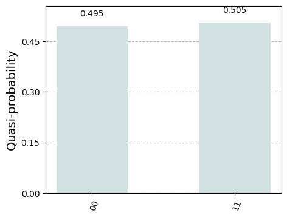
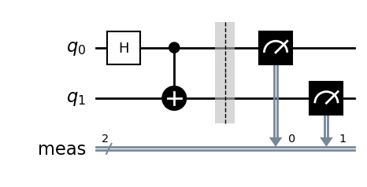
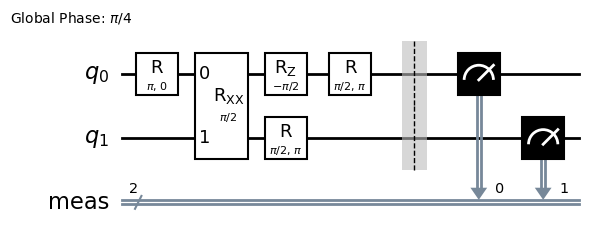

User guide¶
This guide covers usage of the Qiskit AQT provider package with the AQT cloud portal and direct-access computing resources beyond the quick start example.
Provider configuration¶
Handles to computing resources are obtained through the AQTProvider class. For remote resources, it also handles authentication to the AQT cloud and listing of available resources.
Tip
If no access token to the AQT cloud is available, the AQTProvider can nevertheless provide handles to direct-access resources and AQT-compatible simulators running on the local machine. This is the default behavior if the access_token argument to AQTProvider is empty or invalid.
Authentication with an Arnica account¶
Tip
Use this method if you were asked to create your own account to use the AQT Arnica portal.
Call AQTProvider to log in and store your access token securely on the local machine.
from qiskit_aqt_provider import AQTProvider
provider = AQTProvider()
provider.log_in()
Hint
The access token has an expiration time of 10 hours. After this time, you’ll need to call the log_in method again to refresh your token. You shouldn’t need to enter your password again unless you last logged in a very long time ago. You can safely call log_in at any time, as nothing will happen if your access token is still valid.
Authentication with client credentials¶
Tip
Use this method if you received client credentials from AQT to use the Arnica portal.
Use the ArnicaConfig helper class to configure the provider, then call AQTProvider to exchange your credentials for an
access token, which is stored on the local machine.
from qiskit_aqt_provider import AQTProvider
from qiskit_aqt_provider.aqt_provider import ArnicaConfig
config = ArnicaConfig(
client_id="YOUR_CLIENT_ID",
client_secret="YOUR_CLIENT_SECRET",
)
provider = AQTProvider(None, config)
provider.log_in()
Authentication with a static API token¶
Tip
If you received an access token from AQT, you can use it to authenticate with the AQT cloud portal and access remote quantum computing resources.
The access token can be configured by passing it as the first argument to the
AQTProvider initializer:
from qiskit_aqt_provider import AQTProvider
provider = AQTProvider("ACCESS_TOKEN")
Alternatively, the access token can be provided by the environment variable AQT_TOKEN. By default, the local execution environment is augmented by assignments in a local .env file, e.g.
AQT_TOKEN=ACCESS_TOKEN
Loading a local environment override file can be controlled by further arguments to AQTProvider.
Listing remote and simulator resources¶
A configured provider can be used to list available remote and local simulator quantum computing backends.
Each backend is identified by a workspace it belongs to, and a unique resource identifier within that workspace. The resource type helps distinguishing between real hardware (device), hosted simulators (simulator) and offline simulators (offline_simulator).
The AQTProvider.backends method returns a pretty-printable collection of available backends and their associated metadata:
print(provider.backends())
╒════════════════╤════════════════════════════╤═════════════════════════╤═══════════════════╤════════════════════╕
│ Workspace ID │ Resource ID │ Description │ Resource type │ Available qubits │
╞════════════════╪════════════════════════════╪═════════════════════════╪═══════════════════╪════════════════════╡
│ default │ offline_simulator_no_noise │ Offline ideal simulator │ offline_simulator │ 20 │
├────────────────┼────────────────────────────┼─────────────────────────┼───────────────────┼────────────────────┤
│ │ offline_simulator_noise │ Offline noisy simulator │ offline_simulator │ 20 │
╘════════════════╧════════════════════════════╧═════════════════════════╧═══════════════════╧════════════════════╛
Hint
The exact list of available backends depends on the authorizations carried by the configured access token. In this guide, an invalid token is used and the only available backends are simulators running on the local machine.
Remote backend selection¶
Remote backends are selected by passing criteria that uniquely identify a backend within the available backends to the AQTProvider.get_backend method.
The available filtering criteria are the resource identifier (name), the containing workspace (workspace), and the resource type (backend_type). Each criterion can be expressed as a string that must exactly match, or a regular expression pattern using the Python syntax.
Hint
The resource ID filter is called name for compatibility reasons with the underlying Qiskit implementation.
The name filter is compulsory. If it is uniquely identifying a resource, it is also sufficient:
backend = provider.get_backend("offline_simulator_no_noise")
The same backend can be retrieved by specifying all filters (see the list of available backends for this guide):
same_backend = provider.get_backend("offline_simulator_no_noise", workspace="default", backend_type="offline_simulator")
If the filtering criteria correspond to multiple or no backends, a QiskitBackendNotFoundError exception is raised.
Direct-access backends¶
Direct-access resource handles are obtained from a provider using the get_direct_access_backend method:
direct_access_backend = provider.get_direct_access_backend("http://URL")
New in version 1.15.0: The base URL can be provided by the environment variable AQT_DIRECT_URL.
If the environment variable AQT_DIRECT_URL is set and points to a reachable local quantum computing system it will also be listed in the default workspace when calling backends and can be a result of get_backend.
Contact your local system administrator to determine the exact base URL to access your local quantum computing system.
Tip
Resource handles returned by get_backend and get_direct_access_backend both implement the Qiskit BackendV2 interface and can be used exchangeably in the following examples.
Quantum register size¶
The number of qubits available on a given resource may vary. This is because the number of ions loaded in an AQT quantum computing resource is adjustable. All-to-all connectivity is always guaranteed, independently of the number of available qubits.
The number of qubits available for remote and direct-access resources cannot be configured with this provider. For offline simulator, the available_qubits argument in get_backend can be used to set the size of the simulated quantum register. By default, offline simulator are configured with 20 qubits.
Warning
For remote and direct-access resources, the number of qubits is fetched from the resource when initializing the resource handle, i.e. when calling get_backend. Subsequent transpilation calls will assume that at least this number of qubits is available.
Quantum circuit evaluation¶
Single circuit evaluation¶
Basic quantum circuit execution follows the regular Qiskit workflow. A quantum circuit is defined by a QuantumCircuit instance:
circuit = qiskit.QuantumCircuit(2)
circuit.h(0)
circuit.cx(0, 1)
circuit.measure_all()
Warning
AQT backends currently require a single projective measurement as last operation in a circuit. The hardware implementation always targets all the qubits in the quantum register, even if the circuit defines a partial measurement.
Prior to execution circuits must be transpiled to only use gates supported by the selected backend. The transpiler’s entry point is the qiskit.transpile function. See Quantum circuit transpilation for more information.
The AQTResource.run method schedules the circuit for execution on a backend and immediately returns the corresponding job handle:
transpiled_circuit = qiskit.transpile(circuit, backend)
job = backend.run(transpiled_circuit)
The AQTJob.result method blocks until the job completes either successfully or not. The return type is a standard Qiskit Result instance:
Hint
For direct-access backends it is possible to set query_timeout_seconds in the options of the AQTResource.run method and AQTJob.result will time out accordingly latest after 24 hours.
result = job.result()
if result.success:
print(result.get_counts())
else:
raise RuntimeError
{'00': 50, '11': 50}
Multiple options can be passed to AQTResource.run that influence the backend behavior and interaction with the AQT cloud. See the reference documentation of the AQTOptions class for a complete list.
Batch circuits evaluation¶
The AQTResource.run method can also be given a list of quantum circuits to execute as a batch. The returned AQTJob is a handle for all the circuit executions. Execution of individual circuits within such a batch job can be monitored using the AQTJob.progress method. The with_progress_bar option on AQT backends (enabled by default) allows printing an interactive progress bar on the standard error stream (sys.stderr).
transpiled_circuit0, transpiled_circuit1 = qiskit.transpile([circuit, circuit], backend)
job = backend.run([transpiled_circuit0, transpiled_circuit1])
print(job.progress())
Progress(finished_count=0, total_count=2)
The result of a batch job is also a standard Qiskit Result instance. The success marker is true if and only if all individual circuits were successfully executed:
result = job.result()
if result.success:
print(result.get_counts())
else:
raise RuntimeError
[{'00': 50, '11': 50}, {'11': 54, '00': 46}]
Warning
In a batch job, the execution order of circuits is not guaranteed. In the Result instance, however, results are listed in submission order.
Job handle persistence¶
Due to the limited availability of quantum computing resources, a job may have to wait a significant amount of time in the AQT cloud portal scheduling queues. To ease up writing resilient programs, job handles can be persisted to disk on the local machine and retrieved at a later point:
job_ids = set()
job = backend.run(transpiled_circuit)
job.persist()
job_ids.add(job.job_id())
print(job_ids)
# possible interruptions of the program, including full shutdown of the local machine
from qiskit_aqt_provider.aqt_job import AQTJob
job_id, = job_ids
restored_job = AQTJob.restore(job_id, access_token="ACCESS_TOKEN")
print(restored_job.result().get_counts())
{'dc9c9934-ccbe-4353-b195-a49244c712da'}
{'11': 50, '00': 50}
By default, persisted job handles can only be retrieved once, as the stored data is removed from the local storage upon retrieval. This ensures that the local storage does not grow unbounded in the common uses cases. This behavior can be altered by passing remove_from_store=False to AQTJob.restore.
Warning
Job handle persistence is also implemented for jobs running on offline simulators, which allows to seamlessly switch to such backends for testing purposes. However, since the state of the local simulator backend cannot be persisted, offline simulator jobs are re-submitted when restored, leading to the assignment of a new identifier and varying results.
Using Qiskit primitives¶
Circuit evaluation can also be performed using Qiskit primitives through their specialized implementations for AQT backends AQTSampler and AQTEstimator. These classes expose the BaseSamplerV1 and BaseEstimatorV1 interfaces respectively.
Warning
The generic implementations BackendSampler and BackendEstimator are not compatible with backends retrieved from the AQTProvider. Please use the specialized implementations AQTSampler and AQTEstimator instead.
For example, the AQTSampler can evaluate bitstring quasi-probabilities for a given circuit. Using the Bell state circuit defined above, we see that the states \(|00\rangle\) and \(|11\rangle\) roughly have the same quasi-probability:
from qiskit.visualization import plot_distribution
from qiskit_aqt_provider.primitives import AQTSampler
sampler = AQTSampler(backend)
result = sampler.run(circuit, shots=200).result()
data = {f"{b:02b}": p for b, p in result.quasi_dists[0].items()}
plot_distribution(data, figsize=(5, 4), color="#d1e0e0")

In this Bell state, the expectation value of the \(\sigma_z\otimes\sigma_z\) operator is \(1\). This expectation value can be evaluated by applying the AQTEstimator:
from qiskit.quantum_info import SparsePauliOp
from qiskit_aqt_provider.primitives import AQTEstimator
estimator = AQTEstimator(backend)
bell_circuit = qiskit.QuantumCircuit(2)
bell_circuit.h(0)
bell_circuit.cx(0, 1)
observable = SparsePauliOp.from_list([("ZZ", 1)])
result = estimator.run(bell_circuit, observable).result()
print(result.values[0])
1.0
Tip
The circuit passed to estimator’s run method is used to prepare the state the observable is evaluated in. Therefore, it must not contain unconditional measurement operations.
Quantum circuit transpilation¶
AQT backends only natively implement a limited but complete set of quantum gates. The Qiskit transpiler allows transforming any non-conditional quantum circuit to use only supported quantum gates. The set of supported gates is defined in the transpiler Target used by the AQT backends:
print(list(backend.target.operation_names))
['rz', 'r', 'rxx', 'measure']
The transpiler’s entry point is the qiskit.transpile function. The optimization level can be tuned using the optimization_level=0,1,2,3 argument. One can inspect how the circuit is converted from the original one:

to the transpiled one:
transpiled_circuit = qiskit.transpile(circuit, backend, optimization_level=3)
transpiled_circuit.draw("mpl", style="bw")

Tip
While all optimization levels produce circuits compatible with the AQT API, optimization level 3 typically produces circuits with the least number of gates, thus decreasing the circuit evaluation duration and mitigating errors.
Transpiler bypass¶
Warning
We highly recommend to always use the built-in transpiler, at least with optimization_level=0. This guarantees that the quantum circuit is valid for submission to the AQT cloud. In particular, it wraps the gate parameters to fit in the restricted ranges accepted by the AQT API. In addition, higher optimization levels may significantly improve the circuit execution speed.
If a circuit is already defined in terms of the native gates set with their restricted parameter ranges and no optimization is wanted, it can be submitted for execution without any additional transformation using the AQTResource.run method:
native_circuit = qiskit.QuantumCircuit(2)
native_circuit.rxx(pi/2, 0, 1)
native_circuit.r(pi, 0, 0)
native_circuit.r(pi, pi, 1)
native_circuit.measure_all()
job = backend.run(native_circuit)
result = job.result()
if result.success:
print(result.get_counts())
else:
raise RuntimeError
{'00': 50, '11': 50}
Circuits that do not satisfy the AQT API restrictions are rejected by raising a ValueError exception.
Transpiler plugin¶
The built-in transpiler largely leverages the qiskit.transpiler. Custom passes are registered in addition to the presets, irrespective of the optimization level, to ensure that the transpiled circuit is compatible with the restricted parameter ranges accepted by the AQT API:
in the translation stage, the
WrapRxxAnglespass exploits the periodicity of theRXXGateto wrap its angle \(\theta\) to the \([0,\,\pi/2]\) range. This may come at the expense of extra single-qubit rotations.in the scheduling stage, single-qubit gates runs are decomposed as ZXZ products using Qiskit’s
OneQubitEulerDecompose, taking advantage of the virtual nature of the Z gate on AQT’s architecture. TheRewriteRxAsRpass subsequently rewritesRXGateoperations asRGate, wrapping the angle arguments to \(\theta\in[0,\,\pi]\) and \(\phi\in[0,\,2\pi]\)) in order to satisfy the AQT API constraints.
Transpilation in Qiskit primitives¶
The generic implementations of the Qiskit primitives Sampler and Estimator cache transpilation results to improve their runtime performance. This is particularly effective when evaluating batches of circuits that differ only in their parametrization.
However, some passes registered by the AQT transpiler plugin require knowledge of the bound parameter values. The specialized implementations AQTSampler and AQTEstimator use a hybrid approach, where the transpilation results of passes that do not require bound parameters are cached, while the small subset of passes that require fixed parameter values is executed before each circuit submission to the execution backend.
Circuit modifications behind the remote API¶
Circuits accepted by the AQT API are executed exactly as they were transmitted, with the only exception that small-angle \(\theta\) instances of RGate are substituted with
\(R(\theta,\,\phi)\ \to\ R(\pi, \pi)\cdot R(\theta+\pi,\,\phi)\).
The threshold for triggering this transformation is an implementation detail, typically around \(\theta=\pi/5\). Please contact AQT for details.
Common limitations¶
Reset operations are not supported¶
Because AQT backends do not support in-circuit state reinitialization of specific qubits, the Reset operation is not supported. The Qiskit transpiler will fail synthesis for circuits using it (e.g. through QuantumCircuit.initialize) when targeting AQT backends.
AQT backends always prepare the quantum register in the \(|0\rangle\otimes\cdots\otimes|0\rangle\) state. Thus, QuantumCircuit.prepare_state is an alternative to QuantumCircuit.initialize as first instruction in the circuit:
from qiskit import QuantumCircuit
qc = QuantumCircuit(2)
qc.initialize("01")
# ...
qc.measure_all()
is equivalent to:
from qiskit import QuantumCircuit
qc = QuantumCircuit(2)
qc.prepare_state("01")
# ...
qc.measure_all()